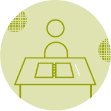
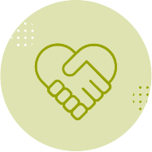
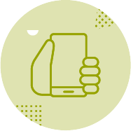

Programes d'Acció Social

Educació
Facilitem que noies, nois, adolescents i joves continuïn els seus estudis perquè puguin tenir un futur amb més oportunitats.

Formació i ocupació
Oferim oportunitats formatives a joves perquè puguin millorar les competències necessàries per accedir a un lloc de treball.

Centres d’acollida
Acompanyem menors, joves tutelats/des i extutelats/des en el seu camí cap a una vida autònoma i independent.

Educació en valors
Promovem el compromís solidari dels joves per fomentar el seu pensament crític i el seu activisme social.

Prevenció de l’ús excessiu de tecnologia
Fem servir l’entorn digital com a mitjà per educar els joves sobre l’ús saludable de la tecnologia i reduir els usos abusius.

Persones adultes
Desenvolupem projectes i activitats per afavorir la inserció laboral de persones de més de 30 anys.